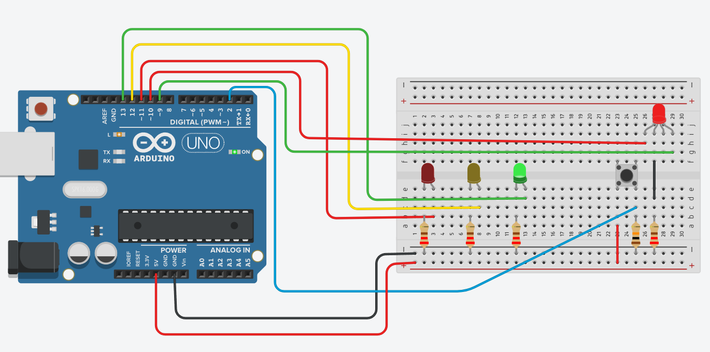
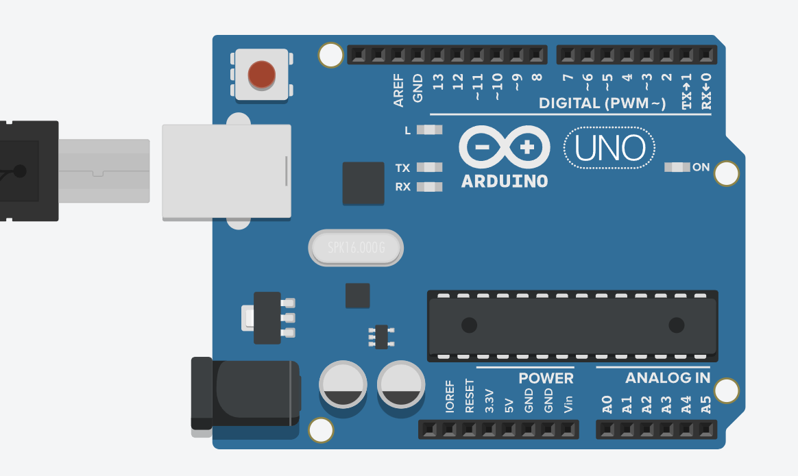
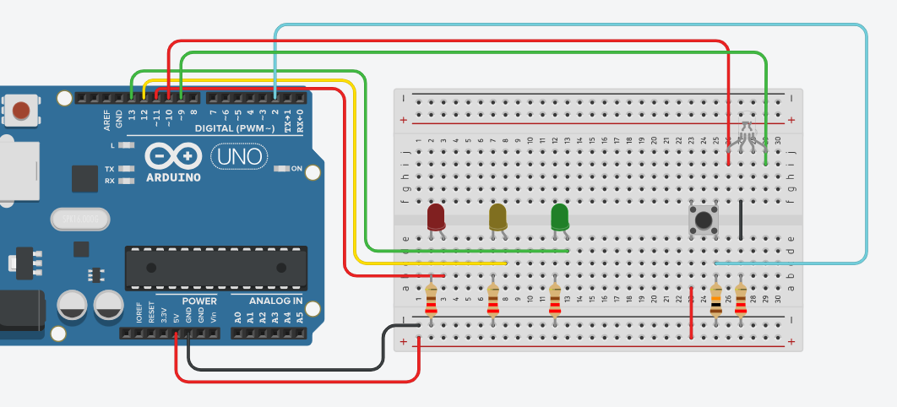
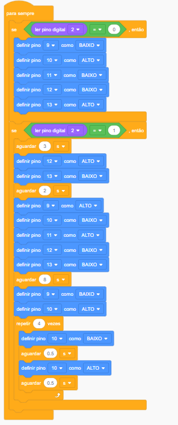
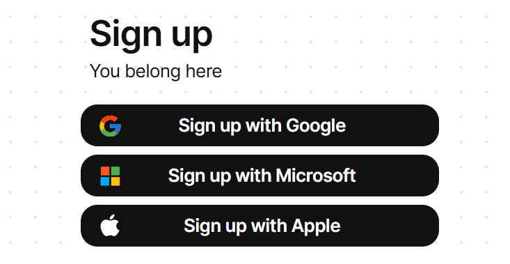
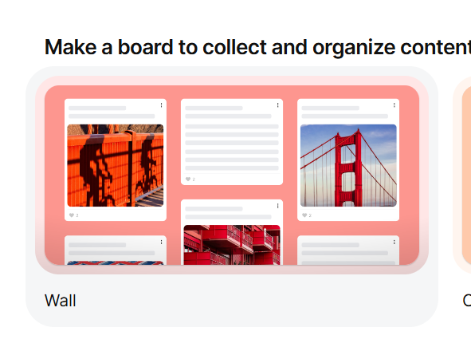

Semáforo Inteligente com Pedestre - Arduino
Nesta oficina, os estudantes devem construir um sistema de semáforo inteligente que integra a sinalização de veículos e pedestres por meio de acionamento por botão e de controle por temporizadores. Utilizando Arduino Uno, LEDs e um LED RGB, o projeto simula um cruzamento real em que o pedestre solicita a travessia e o sistema organiza os tempos de forma segura.
A atividade desenvolve conceitos de lógica de programação, temporização e máquina de estados, articulando entrada (botão) e saídas visuais (LEDs). O projeto pode ser realizado integralmente no simulador Tinkercad ou com componentes físicos, de acordo com a disponibilidade da escola.
A oficina é modular e permite diferentes percursos: pode ser realizada apenas no simulador, apenas com montagem física ou de forma híbrida. Também é possível trabalhar inicialmente apenas o ciclo básico do semáforo, com 3 LEDs, e avançar aos poucos para o modelo completo, conforme o nível da turma. Essa flexibilidade oferece ao educador a possibilidade de ajustar o desafio à realidade dos estudantes.
Ao final, os estudantes terão programado um sistema que simula um cruzamento real, refletido sobre a importância dos tempos de travessia e discutido como a automação pode contribuir para a segurança no trânsito.
Estrutura da Oficina
Materiais
Recursos necessários
Para a maquete (opcional, desafio Vá além)
Preparar
25 minApresentação
Nesta oficina, os estudantes irão projetar um sistema de semáforo inteligente utilizando o Tinkercad e a placa Arduino Uno. O desafio consiste em integrar 3 LEDs (semáforo dos veículos), 1 LED RGB (pedestre) e 1 botão de acionamento, programando a lógica que organiza a travessia com segurança.
A proposta trabalha lógica de programação, temporização e tomada de decisão, com base na interação entre entradas (botão) e saídas (LEDs). O percurso pode acontecer exclusivamente no simulador, apenas na montagem física ou combinando as 2 abordagens, conforme a realidade da turma.
A oficina é estruturada em progressão: inicia com testes simples no simulador, evolui para o ciclo básico do semáforo e pode avançar para o modelo completo com pedestre. Caso haja tempo e interesse, é possível incluir a montagem física e a construção de uma maquete como desdobramento.
Durante o do processo, os estudantes devem compreender como sistemas automatizados organizam fluxos no cotidiano e devem refletir sobre a segurança viária, a acessibilidade e o papel da tecnologia na mobilidade urbana.
record_voice_overSugestão de fala para apresentar aos estudantes
Para introduzir o assunto da aula, faça à turma perguntas como: Vocês já observaram um semáforo funcionando? Como ele sabe quando mudar de cor? E o que acontece quando um pedestre aperta o botão para atravessar? Por que existe um tempo de espera para o sinal fechar?
Em seguida, explique aos estudantes que eles devem construir um semáforo inteligente usando Arduino. Eles começarão pelo simulador, testando a lógica, e depois montarão o circuito físico. Se avançarem bem, poderão incluir a maquete do cruzamento.
Ao final, eles devem entender como a programação ajuda a organizar o trânsito e a tornar as ruas mais seguras.

helpPerguntas reflexivas
- Quais cores aparecem em um semáforo e em que ordem elas surgem?
- Se um carro estiver sozinho na rua à noite, o semáforo deveria funcionar como no restante do dia? Caso não, como o funcionamento poderia ser diferente? Que tipo de tecnologia permitiria essa mudança?
- Qual é a diferença entre um LED comum e um LED RGB? Para que serve cada um deles no projeto do semáforo?
- O tempo de cada cor do semáforo é fixo ou pode variar de acordo com alguma condição?
O elemento central desta oficina é o Arduino Uno, uma plataforma de prototipagem baseada em um microcontrolador. Em termos simples, ele funciona como o “cérebro” do circuito.
Um microcontrolador é um pequeno computador em um único chip, com processador, memória e portas de entrada e saída. Ele executa um programa repetidamente, lê sinais do mundo externo (entradas, como quando um botão é acionado) e controla dispositivos (saídas, como LEDs). Diferentemente de um computador comum, que executa vários programas ao mesmo tempo, o microcontrolador realiza uma tarefa específica de forma contínua e dedicada.
Essa é a principal diferença entre um circuito elétrico simples e um sistema programável. Em um circuito puramente elétrico, as ações são fixas e determinadas apenas pelas ligações físicas (por exemplo, um LED que acende imediatamente ao pressionar um botão). Com o Arduino, podemos criar regras, condições e temporizações.
No semáforo desta oficina, o Arduino precisa monitorar o botão, esperar o tempo adequado, mudar as luzes na ordem correta e, só depois, possibilitar uma nova solicitação. Esse comportamento é definido no código, que organiza a sequência de ações e decisões que o microcontrolador executa continuamente.
Nesta proposta, utilizaremos os pinos digitais para controlar os LEDs (saídas) e ler o botão do pedestre (entrada). Os temporizadores definirão quanto tempo cada luz permanece acesa (por exemplo, amarelo por 3 segundos, travessia por 8 segundos).
Os componentes principais são:
- LEDs comuns (vermelho, amarelo, verde): representam o semáforo dos veículos e acendem em momentos específicos do ciclo.
- LED RGB (cátodo comum): representa o semáforo do pedestre. Ele reúne 3 LEDs em um único componente (vermelho, verde e azul) e alterna entre diferentes combinações de cor. Neste projeto, utilizamos principalmente vermelho (“Não atravesse”) e verde (“Atravesse”).
- Botão de pressão (Push Button): autoriza o pedestre a solicitar a travessia. Ao ser pressionado, envia um sinal ao Arduino, que inicia a sequência programada.
Para ilustrar a situação aos estudantes
O Arduino funciona como o cérebro do nosso semáforo. Ele observa o que acontece (alguém apertou o botão?), decide o que fazer (é hora de mudar a luz?) e executa a ação (acende ou apaga os LEDs). Diferentemente de um circuito comum, aqui podemos criar regras e controlar o tempo. O semáforo não apenas reage: ele também segue uma lógica que nós programamos.

tips_and_updatesDicas de condução
Embarque
Antes de iniciar o projeto do semáforo, indique uma atividade breve para familiarizar a turma com o ambiente do Tinkercad e com o controle básico de LEDs. Esse primeiro contato nivelará os estudantes, especialmente aqueles que nunca utilizaram a plataforma.
boltDesafio!
Desafio relâmpago 5 min
“Vocês têm 5 minutos para fazer o LED piscar a cada 2 segundos. Podem usar o editor de blocos (mais simples) ou a programação em texto (para quem já tem familiaridade com ela). Se alguém conseguir, pode tentar fazer o LED piscar em padrões diferentes, como 2 piscadas rápidas seguidas de uma pausa longa.”
Circule pela sala para ajudar os grupos que encontrarem dificuldades. Observe quem descobre estratégias interessantes e incentive o compartilhamento delas com os colegas.
Para quem terminar rapidamente
No caso de estudantes que terminarem a atividade rapidamente, sugira-lhes que testem diferentes valores de delay (ex.: 100 ms, 500 ms, 2000 ms) e observem como a velocidade da piscada muda. Pergunte: O que acontece se o delay for muito curto ou muito longo?
Criar
110 minProtótipo
Semáforo Inteligente com Pedestre
Arduino


Estrutura sugerida da construção:
Etapa 1 - Semáforo dos carros - ciclo básico
- Montando o circuito dos 3 LEDs no Tinkercad
- Programando a sequência básica com blocos
- Testando diferentes tempos para verde, amarelo e vermelho
- Registrando os tempos escolhidos no Diário de Bordo
Etapa 2 - Adicionando o semáforo do pedestre - botão e LED RGB
- Discutindo o funcionamento real de um semáforo e a sequência de cores
- Conectando o botão e o LED RGB
- Programando o teste simples do botão
- Identificando a necessidade do bloco “aguardar”
- Registrando, no Diário de Bordo, as observações sobre o funcionamento do botão
Etapa 3 - Programando o semáforo inteligente
- Programando o semáforo inteligente
- Montagem física do circuito e testes com o Arduino real
- Baixando a programação do Tinkercad
- Abrindo a Arduino IDE
- Selecionando a placa Arduino Uno e a porta correta
- Testando o funcionamento do semáforo com o botão de pedestre

Fechamento
Após testar o funcionamento do semáforo físico e confirmar que está tudo correto, proponha aos estudantes uma breve conversa sobre os próximos passos. Pergunte:
- Agora que o circuito está funcionando, como vocês acham que seria possível transformar essa montagem em algo mais próximo de um cruzamento real, com postes, ruas e calçadas?
- Quais desafios vocês imaginam que apareceriam ao tentar fixar os LEDs, o botão e o Arduino em uma maquete de papelão?
- Os jumpers que usamos são maleáveis e têm comprimento limitado. Como levar os sinais do Arduino até os LEDs posicionados nos postes da maquete?
- O que acontece se um fio soltar dentro da maquete? Como consertar o problema sem desmontar tudo?
Essa conversa funciona como ampliação de repertório e prepara os estudantes para refletir sobre os limites e as possibilidades do protótipo construído.
tips_and_updatesDicas de condução
Refletir
45 minAprendizados
Ajustes finais e testes
Antes de iniciar as apresentações, reserve alguns minutos para que os grupos revisem suas montagens, façam ajustes e testem novamente o funcionamento do semáforo. Esse momento reduz a ansiedade e garante que os projetos estejam prontos para o compartilhamento.
Oriente os grupos a verificar:
- Se todos os LEDs acendem na sequência correta (verde → amarelo → vermelho → pedestre).
- Se o botão de pedestre está respondendo adequadamente.
- Se os tempos programados correspondem ao que foi planejado.
- Se há algum fio solto ou componente mal posicionado que precise de ajuste.
Circule pela sala oferecendo apoio pontual. Incentive os grupos que já finalizaram a atividade a auxiliar colegas que ainda estejam ajustando o circuito.
Dinâmica de compartilhamento – Feira de semáforos
Organize um momento para que os estudantes apresentem seus projetos. Como a lógica geral é semelhante entre os grupos, estimule a observação das diferenças criativas, como tempos escolhidos, organização dos fios e pequenos ajustes no código.
Sugestão de organização
- Opção A - Apresentação rápida
Cada grupo apresenta seu semáforo em funcionamento, destacando:
- A principal dificuldade enfrentada.
- O modo como a resolveram.
- Se realizaram alguma modificação nos tempos ou pinos.
- Opção B - Roda de testes
Os grupos trocam de lugar e testam o projeto do colega. Pergunte aos estudantes: O funcionamento é igual ao do seu grupo? O que você mudaria?
- Opção C - Mural digital (opcional)
Caso desejem registrar as montagens, os grupos podem publicar fotos ou vídeos em um mural colaborativo (ex.: Padlet) para comentários da turma. Após a dinâmica, reúna a turma e pergunte: Algum grupo fez uma modificação criativa que funcionou bem? Que dificuldades apareceram?
Para configurar um Padlet, basta acessar o link: https://padlet.com/ Crie uma conta usando um e-mail Google ou Microsoft.

Escolha um board como wall, por exemplo.

Discussão – da protoboard ao produto final
Proponha uma conversa sobre o papel do Arduino e da protoboard no processo de criação de sistemas eletrônicos e pergunte: Qual é a principal função do Arduino e da protoboard neste projeto? Em um semáforo real, vocês acham que veríamos fios e protoboard expostos?
Explique que Arduino e protoboard são ferramentas de prototipagem rápida: eles permitem testar, errar, ajustar e reconstruir sem solda. A protoboard é como um "rascunho" de um circuito eletrônico. Ela permite erros, testes, trocas de componentes e recomeços quantas vezes forem necessárias. Em um produto real, o circuito seria impresso em uma placa personalizada (placa de circuito impresso ou PCI), com componentes soldados e protegidos por uma caixa. Essa jornada do rascunho na protoboard ao produto final é exatamente o que engenheiros e inventores fazem no mundo da tecnologia.
Discuta com a turma os aspectos a seguir.
Vantagens da protoboard
- Montagem rápida e sem solda.
- Facilidade para modificar o circuito.
- Componentes reutilizáveis.
- Visualmente didática para compreender conexões.
Limitações
- Conexões podem se soltar.
- Jumpers têm comprimento limitado.
- Circuito fica exposto.
- Não é adequada para uso externo ou permanente.
Finalize reiterando que o que os estudantes vivenciaram nesta oficina é semelhante ao processo real de engenharia: testar, ajustar, validar e aprimorar.
Registro no Diário de Bordo
Solicite aos estudantes que registrem:
- o que aprenderam sobre prototipagem com Arduino e protoboard;
- as vantagens de testar primeiro em protoboard antes de criar uma versão final;
- os principais desafios enfrentados na montagem física.
helpPerguntas reflexivas
- Qual é a principal função do Arduino e da protoboard neste projeto?
- Em um produto eletrônico final (como um semáforo real ou um brinquedo industrializado), existem componentes expostos como os que vemos neste projeto?
- Quais são os desafios ao se transformar um protótipo como o desenvolvido em um projeto final (como um semáforo real ou um brinquedo industrializado)?
tips_and_updatesDicas de condução
Para ir além
30 minMaquete do cruzamento
Esta proposta pode ser desenvolvida com turmas que concluírem as etapas anteriores com mais agilidade ou que demonstrem interesse em aprofundar o projeto. Não é parte obrigatória da oficina, mas uma possibilidade de expansão.
Antes de iniciar a construção da maquete, sugira uma breve conversa com os estudantes sobre os desafios de integrar o circuito a um cenário físico. Pergunte:
- Onde vocês vão fixar o Arduino e a protoboard na maquete? Eles precisam ficar acessíveis para eventuais ajustes?
- Como organizar os fios para que não fiquem soltos ou atrapalhem o visual do cruzamento?
- Os jumpers que usamos são maleáveis, mas têm comprimento limitado. Como levar os sinais do Arduino até os LEDs posicionados nos postes da maquete?
- O que acontece se um fio soltar dentro da maquete? Como vocês vão consertar sem desmontar tudo?
Explique aos estudantes que a maquete não precisa (e nem deve) reproduzir exatamente a protoboard com todos os fios aparentes. O objetivo é organizar os componentes de modo que o circuito funcione corretamente, mantendo os LEDs e o botão visíveis e em destaque, ao passo que a fiação e os demais componentes eletrônicos ficam ocultos ou organizados na parte inferior da maquete.
| Desafio | Possível solução |
|---|---|
| Fios muito curtos para alcançar os postes | Usar jumpers mais longos (macho-fêmea) ou emendar fios com cuidado (unindo jumper macho-fêmea com fêmea-fêmea) |
| Protoboard grande e difícil de esconder | Posicionar a protoboard na parte de trás ou embaixo da maquete, deixando apenas os LEDs e o botão visíveis |
| Fios soltos que se desconectam | Usar fita adesiva ou cola quente para fixar os fios na base e evitar grudar nos contatos |
| Arduino exposto (risco de danos) | Criar uma pequena caixa de papelão ou suporte para proteger a placa |
| LEDs com pernas muito curtas para furar a maquete | Soldar extensões de fio nos terminais dos LEDs ou usar suportes improvisados (palitos de sorvete) |
Para os estudantes que se interessarem pelo projeto e desejarem continuar explorando, apresente caminhos possíveis para evoluir o semáforo inteligente ou criar novos projetos com os conhecimentos adquiridos. Se não tiver sido possível realizar o desafio da maquete em aula, uma excelente forma de complementar o aprendizado é justamente a construção da maquete do cruzamento, aplicando os conceitos de design e organização de componentes discutidos anteriormente. Outra possibilidade é seguir com as reflexões propostas a seguir, que estimulam o planejamento de novos projetos e a conexão com problemas reais da comunidade.
- Como o código poderia ser modificado para que o semáforo dos carros ficasse vermelho por mais tempo quando houvesse um fluxo maior de pedestres? E como detectar esse fluxo?
- Que outros projetos você poderia criar usando os mesmos componentes (Arduino, LEDs, botão, LED RGB)? Como seria?
- Pensando em impacto social positivo, em que outros lugares você poderia aplicar sensores e automação para melhorar o dia a dia das pessoas?
Incentive os estudantes a registrar, no Diário de Bordo, ideias de projeto que gostariam de desenvolver no futuro, utilizando o que aprenderam nesta oficina.
Para refletir com os estudantes
A maquete é um passo intermediário entre a protoboard (rascunho do circuito) e um produto final (com placa de circuito impresso e componentes soldados). Aqui os estudantes encontrarão os mesmos desafios de um engenheiro: organizar fios, fixar componentes, esconder a parte elétrica e garantir que tudo funcione sem emendas soltas. É uma ótima oportunidade para pensar em design e usabilidade!
Após essa conversa e planejamento, os estudantes que optarem por construir a maquete podem começar a colocar a mão na massa, seguindo o passo a passo e as orientações discutidas.